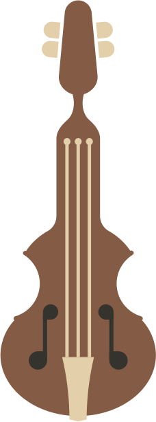
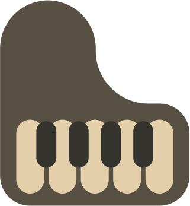
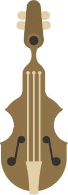
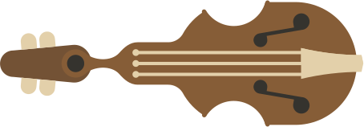
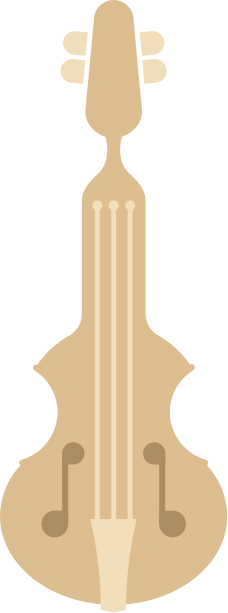
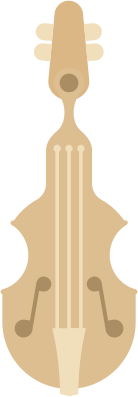
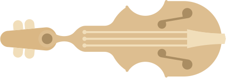

<!DOCTYPE html>
<html>

<head>
  <meta charset="utf-8">
  <meta name="viewport" width=device-width, initial-scale=1.0, maximum-scale=1.0, user-scalable=0>
  <title>Piano Quartet</title>
  <link rel="icon" type="image/x-icon" href="music.ico">
  <style>
    html,
    body {
      width: 100%;
      height: 100%;
      overflow: hidden;
      padding: 0;
      margin: 0;
      font-family: "Edu TAS Beginner", cursive;
      font-optical-sizing: auto;
      font-weight: 500;
      font-style: normal;

    }

    canvas {
      display: block;
      width: 100% !important;
      height: 100% !important;
      vertical-align: top;
    }

    #container {
      width: 100%;
      height: 100%;
      position: absolute;
    }

    .instrument {
      position: absolute;
      z-index: 1;
      cursor: pointer;
    }

    img {
      user-select: none;
    }
  </style>

  <section id="container">
    <!-- <div id="celloButton" style="position:absolute; width: 227px; height: 612px; cursor:pointer;"></div> -->
    
    
    
    
    <!-- 
     -->
    <!--  -->

    <!--  -->
    
    
    
    
  </section>
  <script src="https://cdnjs.cloudflare.com/ajax/libs/p5.js/0.9.0/p5.min.js"></script>
  <script src="https://cdnjs.cloudflare.com/ajax/libs/p5.js/0.9.0/addons/p5.dom.min.js"></script>
  <script src="https://cdnjs.cloudflare.com/ajax/libs/p5.js/0.9.0/addons/p5.sound.min.js"></script>
  <script src="https://cdn.jsdelivr.net/gh/IDMNYU/p5.js-speech@0.0.3/lib/p5.speech.js"></script>
  <script src="script.js"></script>
  <link rel="preconnect" href="https://fonts.googleapis.com">
  <link rel="preconnect" href="https://fonts.gstatic.com" crossorigin>
  <link href="https://fonts.googleapis.com/css2?family=Edu+TAS+Beginner:wght@400..700&display=swap" rel="stylesheet">
  <link rel="stylesheet" href="https://use.typekit.net/rsm5koh.css">
</head>

<body>

</body>

</html>